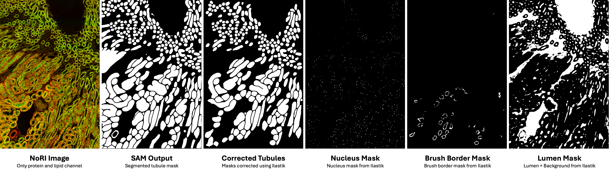
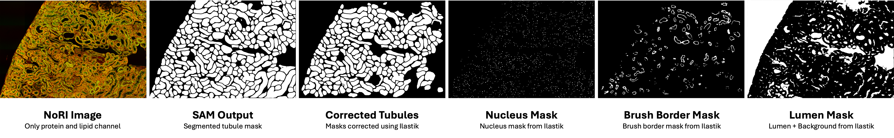
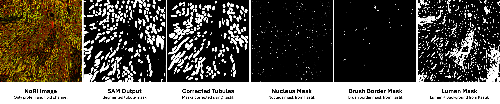

Method
Computational pipeline for segmentation and quantification of protein and lipid concentrations in kidney tissues. Original NoRI images are pre-processed for contrast enhancement. Tubule segmentation is performed using the Segment Anything Model (SAM), and sub-structures (nuclei, brush borders, lumens) are refined with ilastik. Tubules are classified using IF channels and specific markers (LTL, uromodulin, AQP2). Finally, protein and lipid concentrations are measured within the cytoplasm, providing insights into tissue composition.
Results


